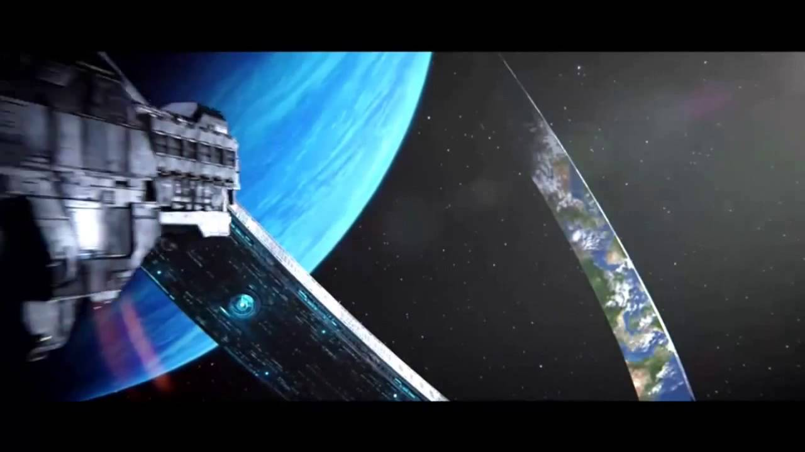

I Gave Halo a Try Seventeen Years After It Released
In the name of Allah, the Most Gracious, the most Merciful.
My Story of Experiencing Halo for the First Time
I’ve been playing video games since the mid 90s, but, for over 20 years, I have hated first person shooters, could not aim at a target if my life depended on it, and did not finish a single first person shooter campaign. But Halo: Combat Evolved changed all of that. This is chapter on of that story.
Chapters
This story is broken into four chapters. Use the links below to jump to any single part of the storey.

Chapter 1
I have never liked playing first person shooter video games. I was (and still am) terrible at it, but most importantly, I simply didn’t enjoy it. I played games, but when it came to playing first person shooters, they were more akin to doing chores rather than playing something fun and enjoyable. But then Halo: Combat Evolved came and turned it all upside down…. Man, this game’s been out for like almost 20 years, and NOW I decide to play it!
To give you a context, I’v played video games since the mid-90s starting with the Windows 95 PC one of my aunts had, to a different variety of gaming hardware, including game consoles such as the Wii, Xbox 360, and the Xbox One, and of course, on PCs, one on I even upgraded the dedicated video card for better performance. But the first time I actually played a shooter was in 2016…that’s a 20-year discrepancy.
2016 was when I finally picked up my copy of Half-Life 2 that’s been “collecting dust” for half a decade in my Steam backlog, and—after a lot of struggling and countless deaths—I finished the campaign. And I didn’t enjoy most of it…the gameplay I mean. I played on lower difficuly for the story, mostly, to see why peopled loved the game so much. I enjoyed the story, the occasional physics puzzles and the like. But I mostly tried to tolerate the shooter portion, trying to get past them as easily as I could to progress into the campaign. After I finished it, I didn’t play another FPS game for a couple years.
Now, I was about to dip my towes into the world of Halo. I had no idea what was in store for me. Click here to continue to chapter 2.
External Links
Thanks for visiting!